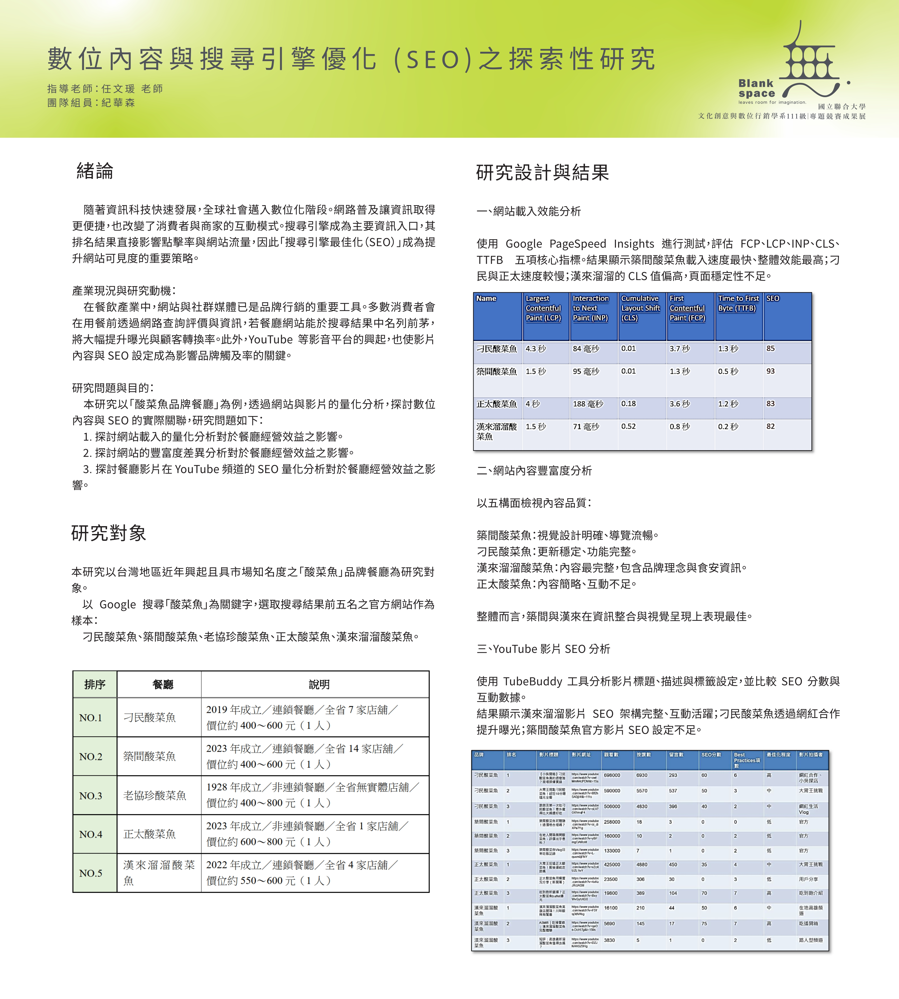
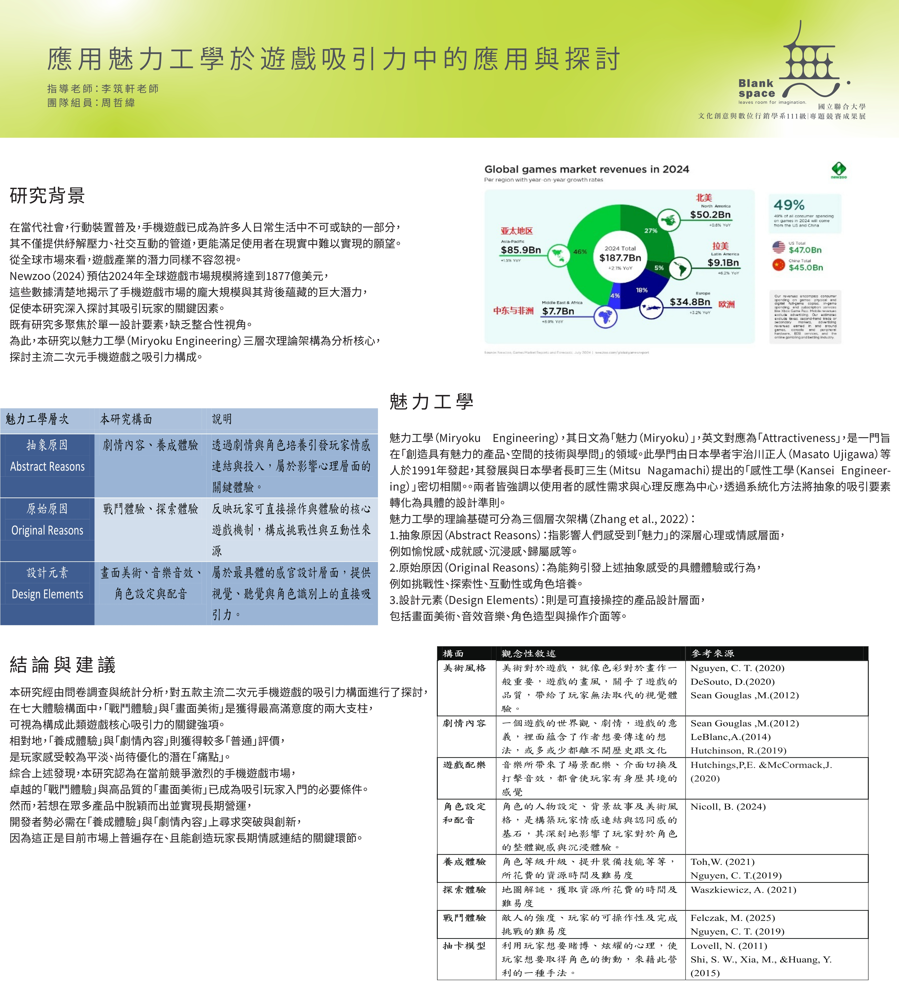
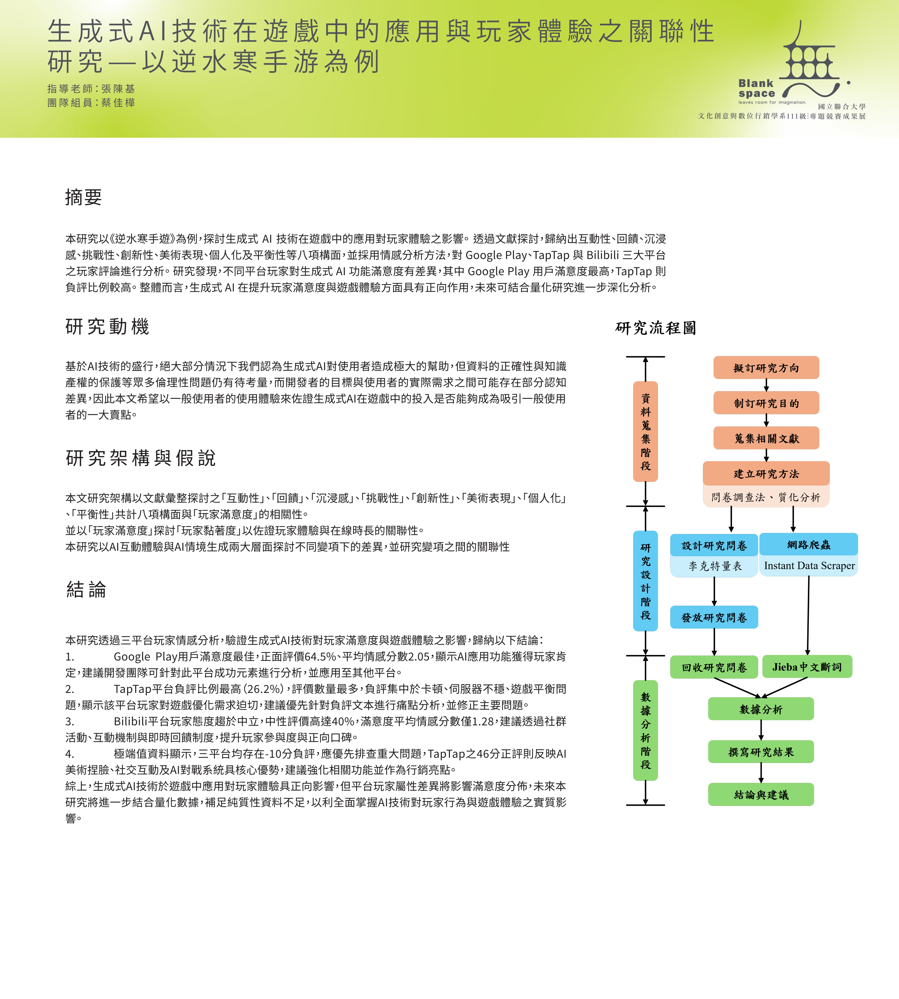

台鐵數位服務失誤對體驗價值與 顧 客 行 為 的 影 響:數 位 素 養 的 調 節 作 用
團 隊 組 員:劉宇秦
指 導 老 師:胡愈寧 教授

本研究旨在探討臺鐵數位服務失誤對顧客滿意度與使用意圖之影響,並進一步分析體 驗價值與數位素養在此關係中的調節作用。
深入了解 →學 習 風 格 對 數 位 學 習 成 效 與 滿 意 度 的 影 響: 以數位學習自我效能為中介變項
團 隊 組 員:陳柏豪
指 導 老 師:胡愈寧 教授

本研究旨在探討學習風格對數位學習成效與滿意度的影響,並進一步分析數位學習自我效能與社 會孤立的角色
深入了解 →數位內容與搜尋引擎優化 ( SEO )之探索性研究
團 隊 組 員:紀華森
指 導 老 師:任文瑗 教授
本研究以「酸菜魚品牌餐廳」為例,透過網站與影片的量化分析,探討數位 內容與 SEO 的實際關聯。
深入了解 →應用魅力工學於遊戲吸引力中的應用與探討
團 隊 組 員:周哲緯
指 導 老 師:李筑軒 老師
本研究以魅力工學(Miryoku Engineering)三層次理論架構為分析核心, 探討主流二次元手機遊戲之吸引力構成。
深入了解 →以同步設計於寵物飲水機之研究
團 隊 組 員:宋依蓁
指 導 老 師:李筑軒 老師

本研究以同步設計(Concurrent Design)理論為核心方法, 透過跨領域協作思維,整合同步作業之概念與系統設計工具, 包含形態學圖表法、Pugh 概念選擇法及有限狀態機(FSM)分析。
深入了解 →粉絲訂閱之APP體驗行銷之研究-以DearU bubble為例
團 隊 組 員:林茵綺
指 導 老 師:張陳基 教授

本研究以韓國 SM 娛樂旗下 DearU 公司開發的訂閱制應用程式 bubble 為研究對 象,探討其體驗行銷策略對使用者態度、忠誠度與續訂意願的影響。
深入了解 →生成式AI技術在遊戲中的應用與玩家體驗之關聯性 研究-以逆水寒手游為例
團 隊 組 員:蔡佳樺
指 導 老 師:張陳基 教授
本研究以《逆水寒手遊》為例,探討生成式 AI 技術在遊戲中的應用對玩家體驗之影響。
深入了解 →OMO導覽應用於生態社區文化旅遊之成效評估
團 隊 組 員:李丞恩
指 導 老 師:熊子扉 老師

本研究以苗栗塭內紫斑蝶生態遊程為案例,實際檢驗OMO導覽系統在生態與文化旅遊中的應用成效,重點 包括提升導覽品質、教育效果、參與度及社區生態保護意識。
深入了解 →